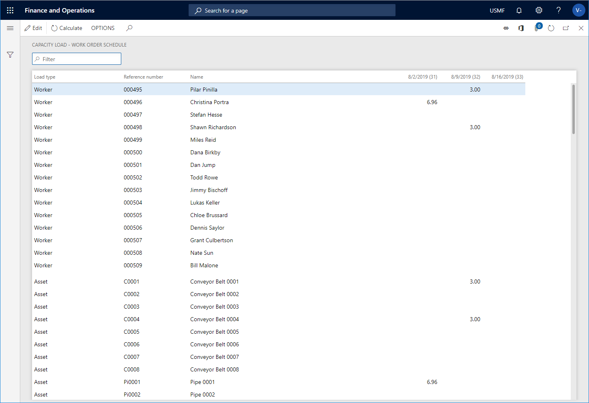

Berechnen der Kapazitätsauslastung für geplante Arbeitsaufträge
Important
Dynamics 365 for Finance and Operations hat sich zu speziell entwickelten Anwendungen entwickelt, mit denen Sie bestimmte Geschäftsfunktionen verwalten können. Weitere Informationen zu diesen Änderungen finden Sie im Dynamics 365-Lizenzierungshandbuch.
Sie können die Kapazitätsauslastung für geplante Arbeitsaufträge berechnen, um eine Übersicht der Arbeitsauslastung von Ressourcen für einen bestimmten Zeitraum zu erhalten. Berechnungen können für die folgenden Ressourcen vorgenommen werden: Wartungsarbeiter, Arbeitskraftgruppen, Werkzeuge und Anlagen.
Klicken Sie auf Anlagenverwaltung > Abfragen > Planung > Kapazitätsauslastung.
Wählen Sie im Dialogfeld Kapazitätsauslastung berechnen > Anzeigen aus, welchen Auslastungstyp Sie berechnen möchten: Kapazität, Reserviert oder Rest.
Wählen Sie Ja auf der Umschaltfläche Null überspringen aus, wenn keine Ergebnisse mit Null angezeigt werden sollen.
Wählen Sie die Ressourcentypen aus, für die Sie die Kapazitätsauslastung berechnen möchten, indem Sie Ja auf den relevanten Umschaltschaltflächen auswählen: Arbeitskraft, Wartungsarbeitergruppe, Werkzeug und Anlage.
Wählen Sie das Startdatum für die Berechnung im Feld Von Datum aus.
Im Feld Intervalltyp wählen Sie das Intervall für die Kalkulation aus: Tag, Woche, Monat oder Quartal.
Fügen Sie im Feld Periodenhäufigkeit die Anzahl der Intervalle ein, für die Sie eine Kalkulation ausführen möchten. Wenn Sie beispielsweise Tag als Intervalltyp ausgewählt haben und Sie die Zahl „5“ in diesem Feld eingeben, wird eine Berechnung von fünf Tagen ab dem Startdatum vorgenommen.
Klicken Sie auf OK, um die Berechnung zu starten.
Die Abbildung unten zeigt das Ergebnis einer Berechnung, die drei Wochen abdeckt, für den Auslastungstyp Reserviert.

[!NOTE] Wenn Sie Auslastungstypen Kapazität oder Rest für die Berechnung auswählen, wird dasselbe Ergebnis angezeigt, wenn keine Reservierungen für die Ressourcen in der ausgewählten Periode vorgenommen wurden.
Weitere Informationen darüber, wie die Kapazitätsauslastung für Wartungsplanpositionen und nicht geplante Arbeitsaufträge berechnet wird, finden Sie unter Berechnen der Kapazitätsauslastung.